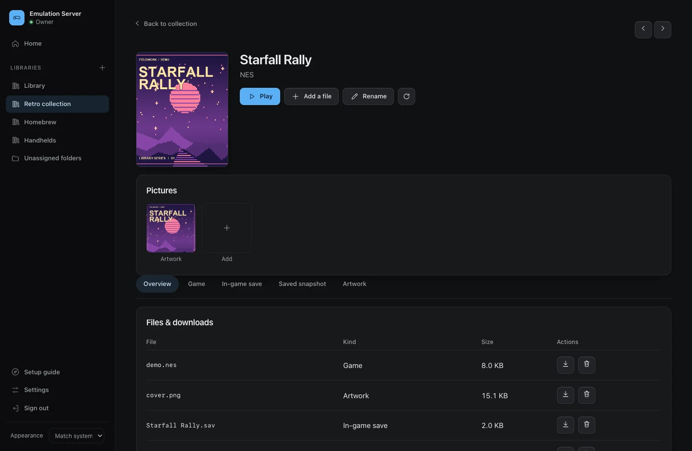
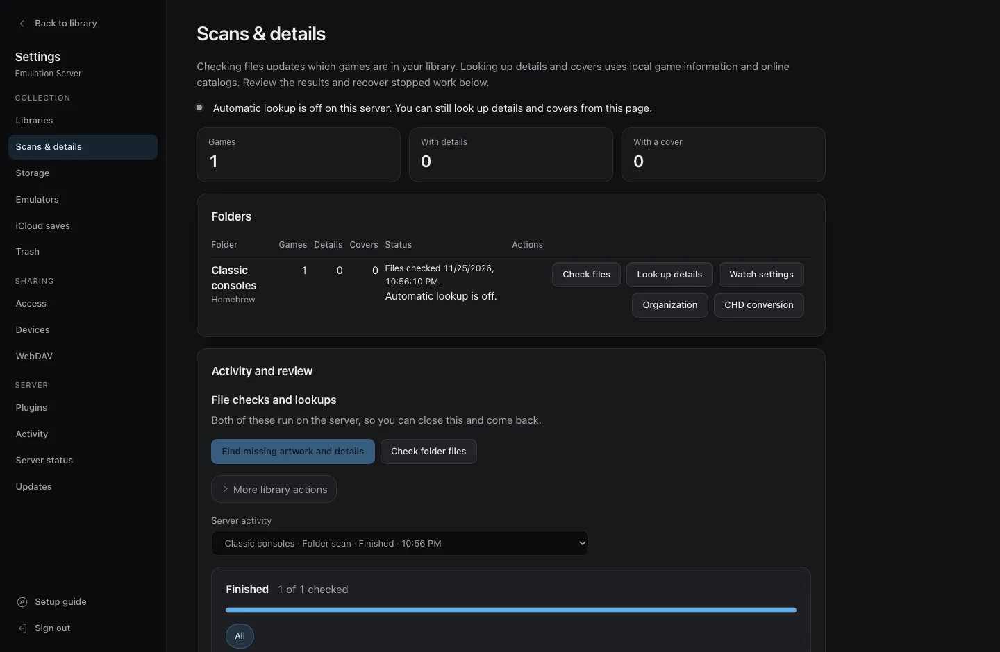

Browse your collection
Scan folders in place or upload games. Switch between covers and a list, search by name, and filter by system.
Library guideOpen-source · Self-hosted
A home for the games, artwork, and saves you already own. Run Emulation Server on your computer, then browse your library from a browser or a compatible emulator.
Nightly builds for macOS, Windows, and Linux · Share
Feature gallery
Browse by console, open a game’s files, keep track of progress, and decide which devices get access.
Scan folders in place or upload games. Switch between covers and a list, search by name, and filter by system.
Library guide
Open supported games from the library when a compatible browser core is installed. Browser cores are downloaded separately.
Browser playback guide
Index the folders you already use and turn on folder watching to pick up new files. Review scans and look up missing details and artwork.
Library maintenance guide
Manage in-game saves and save states on the game’s page alongside its artwork and downloadable files.

Find the Provenance save states in your iCloud and copy them into matching games in your library. A server on a Mac reads them directly; elsewhere, sign in to Apple.
iCloud saves guide
Pair a compatible app or give it a revocable device token. Choose read-only access or allow the device to write to your library.
Explore compatible appsRun the command for your system, then choose Nightly or Release when prompted.
curl -qfsSL https://raw.githubusercontent.com/Provenance-Emu/emulator-content-server/main/scripts/install-server.sh | bash& ([ScriptBlock]::Create((Invoke-RestMethod 'https://raw.githubusercontent.com/Provenance-Emu/emulator-content-server/main/scripts/install-server.ps1')))Apple Silicon
Desktop app (.dmg) Standalone server (.tar.gz)x64
Desktop app (.msi) Standalone server (.zip)x64
Desktop app (.deb) AppImage Standalone server (.tar.gz)Nightlies are pre-release builds. Release notes and checksums · Docker and source installation
Documentation
Set up backups, connect from another network, or build a client for your own emulator.
The Provenance family
Server integration depends on the app and build. Check the app’s documentation for availability.
Multi-system emulation for iPhone, iPad, and Apple TV.
GameCube and Wii emulation powered by Dolphin.
Dedicated Dreamcast emulation powered by Flycast.
Atari Jaguar and Jaguar CD on macOS, Windows, and Linux. Browse and download from your Emulation Server in supported builds.
More from Provenance Emu Controller skins Open-source projects